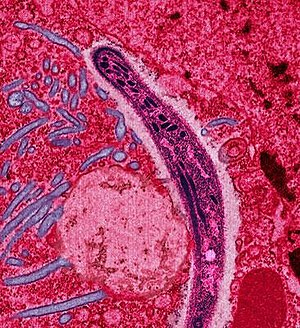
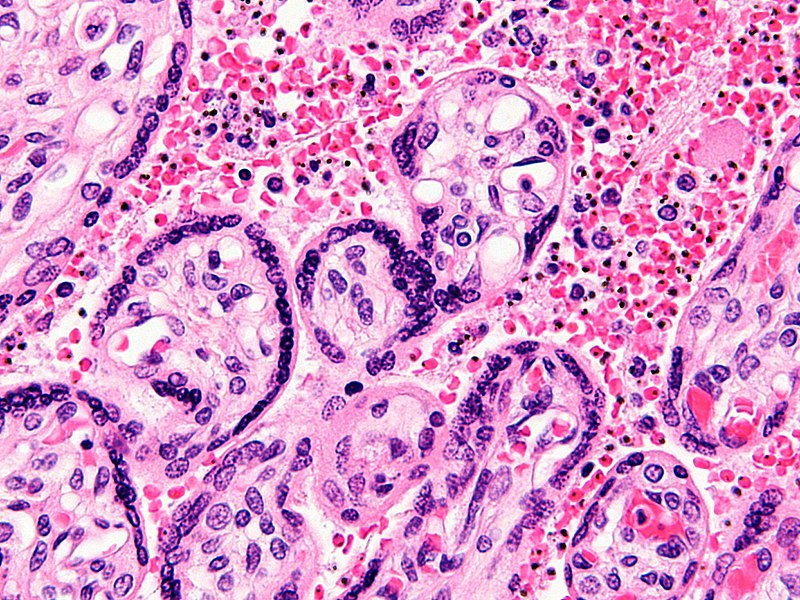
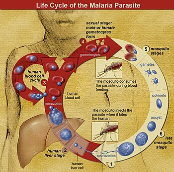

FCIH Hospital
Your Health Is Our Proiority
About Malaria
Malaria is a mosquito-borne infectious disease affecting humans and other animals caused by parasitic protozoans (a group of single-celled microorganisms) belonging to the Plasmodium type.[2] Malaria causes symptoms that typically include fever, tiredness, vomiting, and headaches.[1] In severe cases it can cause yellow skin, seizures, coma, or death.[1] Symptoms usually begin ten to fifteen days after being bitten.[2] If not properly treated, people may have recurrences of the disease months later.[2] In those who have recently survived an infection, reinfection usually causes milder symptoms.[1] This partial resistance disappears over months to years if the person has no continuing exposure to malaria.[1]
 The disease is most commonly transmitted by an infected female Anopheles mosquito.[2] The mosquito bite introduces the parasites from the mosquito's saliva into a person's blood.[2] The parasites travel to the liver where they mature and reproduce.[1] Five species of Plasmodium can infect and be spread by humans.[1] Most deaths are caused by P. falciparum because P. vivax, P. ovale, and P. malariae generally cause a milder form of malaria.[1][2] The species P. knowlesi rarely causes disease in humans.[2] Malaria is typically diagnosed by the microscopic examination of blood using blood films, or with antigen-based rapid diagnostic tests.[1] Methods that use the polymerase chain reaction to detect the parasite's DNA have been developed, but are not widely used in areas where malaria is common due to their cost and complexity.[5] The risk of disease can be reduced by preventing mosquito bites through the use of mosquito nets and insect repellents, or with mosquito control measures such as spraying insecticides and draining standing water.[1] Several medications are available to prevent malaria in travellers to areas where the disease is common.[2] Occasional doses of the combination medication sulfadoxine/pyrimethamine are recommended in infants and after the first trimester of pregnancy in areas with high rates of malaria.[2] Despite a need, no effective vaccine exists, although efforts to develop one are ongoing.[2] The recommended treatment for malaria is a combination of antimalarial medications that includes an artemisinin.[1][2] The second medication may be either mefloquine, lumefantrine, or sulfadoxine/pyrimethamine.[6] Quinine along with doxycycline may be used if an artemisinin is not available.[6] It is recommended that in areas where the disease is common, malaria is confirmed if possible before treatment is started due to concerns of increasing drug resistance.[2] Resistance among the parasites has developed to several antimalarial medications; for example, chloroquine-resistant P. falciparum has spread to most malarial areas, and resistance to artemisinin has become a problem in some parts of Southeast Asia.
Life Cycle
In the life cycle of Plasmodium, a female Anopheles mosquito (the definitive host) transmits a motile infective form (called the sporozoite) to a vertebrate host such as a human (the secondary host), thus acting as a transmission vector. A sporozoite travels through the blood vessels to liver cells (hepatocytes), where it reproduces asexually (tissue schizogony), producing thousands of merozoites. These infect new red blood cells and initiate a series of asexual multiplication cycles (blood schizogony) that produce 8 to 24 new infective merozoites, at which point the cells burst and the infective cycle begins anew.[30]
Other merozoites develop into immature gametocytes, which are the precursors of male and female gametes. When a fertilized mosquito bites an infected person, gametocytes are taken up with the blood and mature in the mosquito gut. The male and female gametocytes fuse and form an ookinete—a fertilized, motile zygote. Ookinetes develop into new sporozoites that migrate to the insect's salivary glands, ready to infect a new vertebrate host. The sporozoites are injected into the skin, in the saliva, when the mosquito takes a subsequent blood meal.[31]
Only female mosquitoes feed on blood; male mosquitoes feed on plant nectar and do not transmit the disease. The females of the Anopheles genus of mosquito prefer to feed at night. They usually start searching for a meal at dusk and will continue throughout the night until taking a meal.[32] Malaria parasites can also be transmitted by blood transfusions, although this is rare.
Number of malaria deaths Estimated deaths, 2000 2015
| year | |||||
|---|---|---|---|---|---|
| 2000 | 2005 | 2010 | 2015 | ||
| continent | africa | 0% | 30% | 50% | 65% |
| south asia | 0% | 15% | 25% | 50% | |
| europe | 0% | 10% | 60% | 65% | |
| americas | 0% | 30% | 40% | 70% | |
| western pacific | 0% | 50% | 60% | 65% | |
visit us on

Copyright ©2018 All Right Reserved to fcih Hospital ®Team